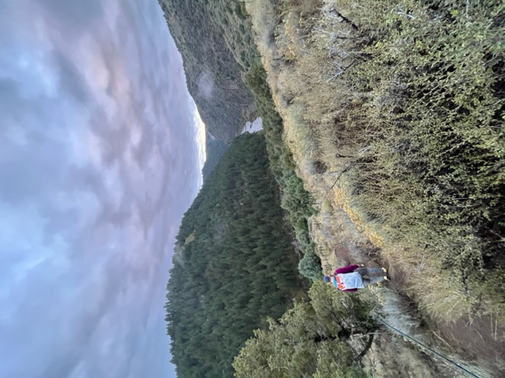

Access Map #1
Some of the popular access points include Teton River County Park, where you can find well-maintained trails and picnic areas, and Horseshoe Bridge , which offers an easily accessible spot for anglers with a scenic view of the river.

Some of the popular access points include Teton River County Park, where you can find well-maintained trails and picnic areas, and Horseshoe Bridge , which offers an easily accessible spot for anglers with a scenic view of the river.
The Teton River, known for its world-class fly fishing, provides anglers with several accessible points to cast their lines and immerse themselves in its pristine waters.

Teton River Canyon provides more adventurous fishing opportunities, accessible through hiking trails or boat launches.
Whether you're a novice or an experienced angler, there are numerous access points along the river's course that cater to all levels of expertise.
These access points ensure that every angler can find a suitable entry point to the Teton River, making it a welcoming destination for anyone eager to try their hand at fly fishing or enjoy the river's natural beauty.